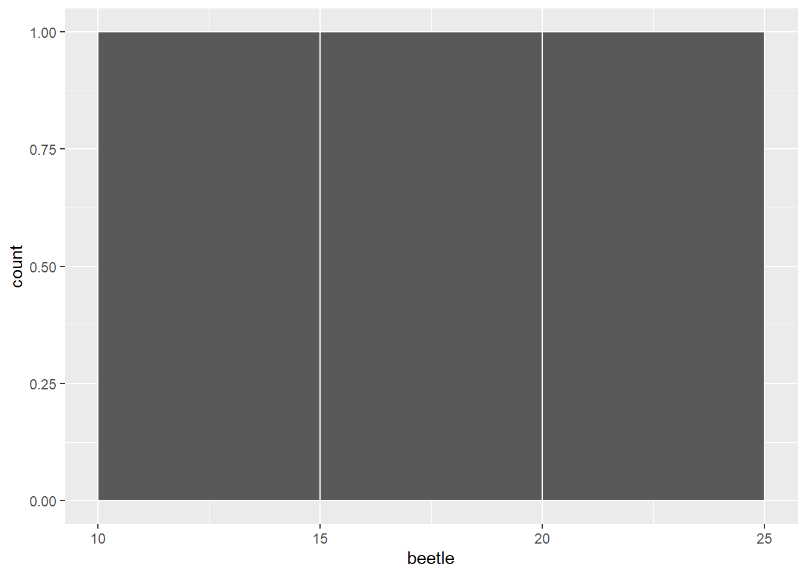
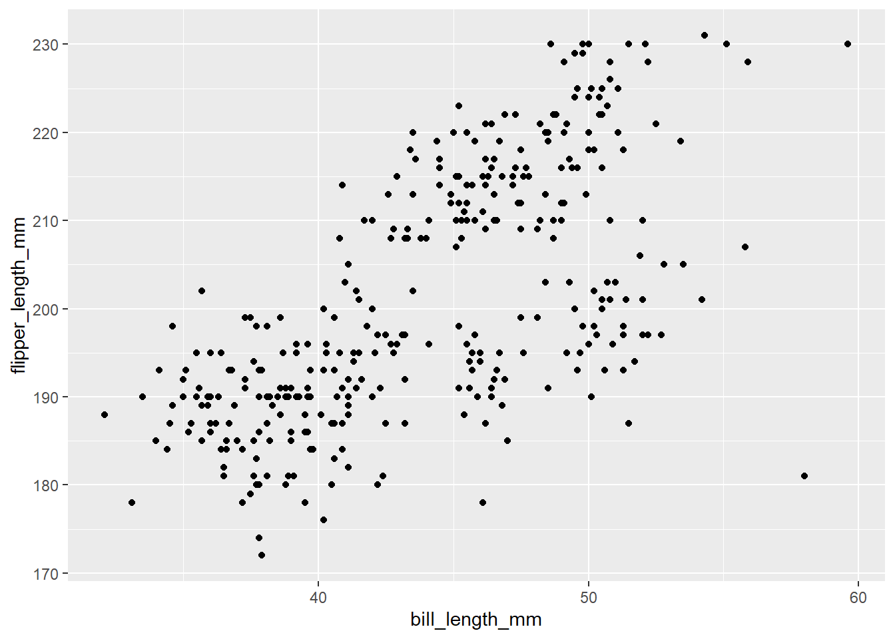
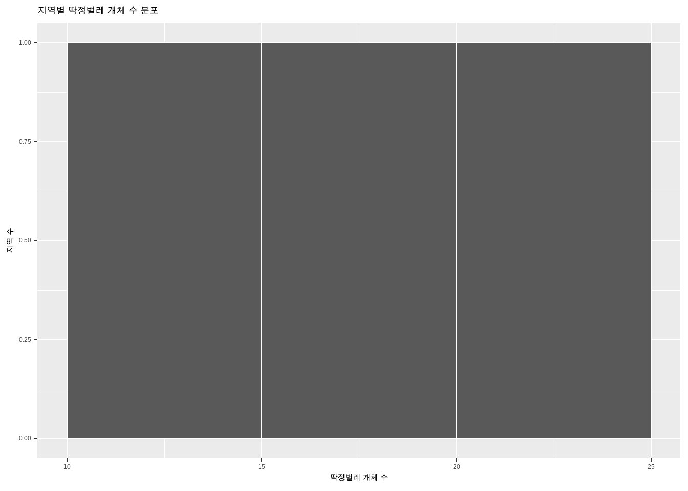

x <- 3
x[1] 3R은 데이터 분석과 그래픽 생성에 널리 사용되는 강력한 오픈 소스 프로그래밍 언어입니다. 다양한 학문 분야에 걸쳐 R은 표준 통계 소프트웨어로 자리 잡고 있으며, 전 세계적인 규모의 커뮤니티를 자랑합니다. 분석 과정을 코드로 남겨 재현 가능성을 확보할 수 있다는 점, 그리고 빠르고 직관적으로 배울 수 있다는 점이 큰 장점입니다.
R을 다운로드하려면 CRAN 사이트로 이동하여 각자의 운영 체제(윈도우, 리눅스, macOS)에 맞는 버전을 선택해야 합니다. 아울러 Posit의 다운로드 페이지에서 RStudio나 Positron 같은 통합개발환경(IDE)을 함께 설치하면 R을 더욱 편리하게 사용할 수 있습니다. 코드를 쉽게 작성하고 실행 결과를 즉각적으로 확인할 수 있는 분석 환경을 구축하는 데 충분한 시간을 투자하시기 바랍니다.
R은 오픈 소스 소프트웨어이므로, 누구나 데이터 분석을 돕는 사용자 정의 함수 패키지를 개발하여 공유할 수 있습니다. 이러한 패키지들의 모음을 라이브러리(library)라고 부르며, 대부분 CRAN 저장소를 통해 배포됩니다. 필요한 라이브러리를 다운로드하여 설치해 두면, 분석 과정에서 언제든지 호출하여 사용할 수 있습니다.
동일한 분석 환경을 재현할 수 있도록, 패키지 설치와 로드 과정을 명시적인 코드로 남기는 방식을 권장합니다. 시스템 폴더에 쓰기 권한이 없는 특수한 경우를 제외하면, 일반적으로는 사용자 권한으로 라이브러리를 설치하는 것으로 충분합니다.
가장 기본적인 패키지 설치 방법은 RStudio 상단 메뉴의 “Tools”에서 “Install Packages…”를 선택하는 것입니다(우하단 Packages 패널의 “Install” 버튼을 눌러도 같은 대화상자가 열립니다). 설치 과정에서 CRAN 미러(mirror)를 선택하라는 안내가 나타날 수 있는데, 이는 지속적으로 업데이트되는 CRAN 저장소 중 어느 위치의 서버를 사용할지 지정하는 과정입니다. 대개 어떤 미러를 선택하더라도 설치에는 지장이 없습니다.
대화상자의 입력창에 MASS를 입력하면 자동완성 목록이 뜨며, 이를 선택하고 “Install”을 누르면 설치가 진행됩니다. 설치가 끝나면 해당 패키지가 Packages 패널의 목록에 알파벳순으로 추가됩니다. 한 번 설치된 패키지는 필요할 때마다 자유롭게 불러올 수 있습니다.
메뉴를 사용하지 않고 코드로 직접 설치하려면 install.packages() 명령어를 사용합니다. 예컨대 MASS 라이브러리를 설치하고자 한다면 다음 코드를 실행해 주십시오.
install.packages("MASS")설치한 라이브러리를 호출하여 R 세션에서 활성화하려면 library() 명령어를 사용합니다.
library(MASS)코드에 문법적 오류가 없다면, R 콘솔은 별다른 메시지 없이 다음 줄을 표시합니다. 이제 해당 라이브러리에 포함된 모든 함수와 데이터셋을 자유롭게 활용하실 수 있습니다.
R은 객체(object)를 중심으로 작동하며, 다양한 종류의 객체를 지원합니다. 객체는 데이터를 저장할 뿐만 아니라, 연산을 수행하기 위한 정보도 함께 지닙니다. 객체에 특정 값을 할당할 때는 화살표(<-)나 등호(=)를 사용합니다. R 커뮤니티에서는 전통적으로 화살표(<-)를 사용하는 것을 권장하므로, 이 표기법에 익숙해지시기를 바랍니다.
x <- 3
x[1] 3산술 연산에는 덧셈(+), 뺄셈(-), 곱셈(*), 나눗셈(/), 거듭제곱(^) 기호를 그대로 사용합니다. R은 우리가 수학 시간에 배운 사칙연산의 기본 순서를 정확히 따릅니다. 괄호 안의 식을 가장 먼저 계산하고, 거듭제곱, 곱셈과 나눗셈, 덧셈과 뺄셈 순으로 연산을 수행합니다.
x <- 2 * (1 + 2)
x[1] 6위 코드를 실행하면 6을 반환합니다. 괄호를 적절히 사용하여 연산 순서를 명확하게 통제하는 것이 좋습니다. 단, 여는 괄호와 닫는 괄호의 짝이 반드시 맞아야 합니다. 닫는 괄호가 누락되면 R은 결과를 반환하지 않고 계속해서 입력을 기다리는 상태에 머무르게 됩니다.
주석(comment)은 해시 기호(#)로 시작하며, 해당 줄에서 기호 뒤에 오는 내용은 코드로 실행되지 않습니다. 다른 분석가나 미래의 자신이 코드를 쉽게 이해할 수 있도록, 공백과 주석을 적극적으로 활용하여 가독성을 높여 주십시오.
x <- 2 * 5 # 이 줄은 10을 계산하여 x에 할당합니다.
x[1] 10R에서 변수 이름은 대소문자를 엄격하게 구분합니다. 즉, x와 X는 완전히 다른 두 개의 객체입니다. 변수 이름은 문자와 숫자, 언더바(_), 마침표(.)를 조합하여 만들 수 있으나, 공백이나 쉼표 같은 특수 문자는 포함할 수 없습니다. 또한 숫자나 언더바로 시작할 수 없다는 제약도 있으므로 2x나 _x 같은 이름은 오류를 냅니다. 일관된 명명 규칙을 세우고 직관적인 이름을 부여하는 습관은 향후 코드를 디버깅하고 유지보수할 때 큰 도움이 됩니다.
함수(function)는 R에서 매우 중요한 또 다른 유형의 객체입니다. R은 통계 분석과 데이터 처리를 위한 풍부한 내장 함수를 제공합니다. 함수는 괄호 안에 인자(argument)를 전달하여 호출하며, 연산 결과를 반환합니다. 가령 여러 숫자 중 최댓값을 찾고자 할 때는 max() 함수를 사용합니다.
max(9, 5)[1] 9인자를 필요로 하지 않는 함수일지라도 호출할 때는 반드시 빈 괄호를 붙여야 합니다. 현재 작업 공간에 존재하는 모든 객체의 목록을 보여주는 objects() 함수는 다음과 같이 호출합니다.
objects()[1] "x"함수를 호출한 뒤 그 결과를 다른 객체에 할당하지 않으면 결괏값이 콘솔 화면에 즉시 출력됩니다. 반면 결과를 특정 객체에 할당하면 값은 메모리에 저장될 뿐 화면에 나타나지는 않습니다.
my_max <- max(9, 5)
my_max[1] 9함수의 정확한 사용법이 궁금하다면 help() 함수를 사용하거나 함수 이름 앞에 물음표(?)를 붙여 도움말 문서를 확인해 보십시오. 도움말 페이지는 함수의 작동 원리와 다양한 예제 코드를 상세히 제공하므로, 분석 역량을 키우는 데 큰 도움이 됩니다. 인자는 위치 순서대로 전달할 수도 있고, 인자의 이름을 명시하여 전달할 수도 있습니다. 이름을 명시하면 순서를 외울 필요가 없고 코드의 의미가 훨씬 명확해집니다.
R은 분석 목적에 맞게 설계된 다채로운 데이터 구조를 갖추고 있습니다. 복잡한 데이터를 능숙하게 다루려면 이러한 기본 구조들의 특징을 깊이 이해해야 합니다.
가장 단순한 형태의 데이터는 단일 숫자형(numeric) 또는 문자형(character) 데이터입니다. 숫자형 데이터는 수리적 연산의 대상이 되며, 문자형 데이터는 텍스트를 표현합니다. R에서 텍스트를 문자형 데이터로 인식시키려면 반드시 큰따옴표나 작은따옴표로 감싸야 합니다.
name <- "Stephen Loftus"
height <- 71변수에는 단일 값뿐만 아니라 여러 개의 값을 한 번에 저장할 수 있습니다. 동일한 유형의 값(숫자, 문자, 논리값 등)이 연속적으로 나열된 1차원 구조를 벡터(vector)라고 부릅니다. 벡터는 c() 함수를 이용하여 손쉽게 생성합니다.
height <- c(75, 74, 67, 83, 75)
height[1] 75 74 67 83 75연속적인 정수 수열이 필요할 때는 콜론(:) 연산자를 활용하시면 편리합니다.
y <- 3:10
y[1] 3 4 5 6 7 8 9 10벡터 내부의 특정 요소에 접근하려면 대괄호 안에 인덱스(위치 번호)를 지정합니다. R은 파이썬 등과 달리 첫 번째 요소의 인덱스가 1부터 시작한다는 점에 유의해 주십시오.
height[3][1] 67대괄호 안에 여러 인덱스를 묶은 벡터를 전달하면, 해당 위치의 요소들을 한꺼번에 추출할 수 있습니다.
height[c(1, 3, 5)][1] 75 67 75R은 벡터화 연산(vectorized operation)을 기본으로 지원하므로, 복잡한 반복문을 작성하지 않고도 벡터 전체에 수학적 연산을 일괄 적용할 수 있습니다. 벡터에 포함된 요소의 총 개수를 알고 싶다면 length() 함수를 호출하십시오. 참고로, 하나의 벡터 안에는 숫자형과 문자형 데이터를 섞어서 저장할 수 없습니다. 만약 혼합하여 입력할 경우, R은 데이터의 손실을 막기 위해 모든 숫자를 강제로 문자형으로 변환합니다.
팩터(factor)는 벡터와 겉모습이 유사하지만, 미리 정의된 유한한 개수의 범주(level)를 가지는 데이터를 표현할 때 사용합니다. 예를 들어 조사 지역의 서식지 유형을 기록한 데이터라면 일반 문자열 벡터보다는 팩터로 저장하는 것이 통계적으로 올바릅니다.
habitats <- factor(c("marsh", "grassland", "forest", "tundra", "grassland"))
habitats[1] marsh grassland forest tundra grassland
Levels: forest grassland marsh tundra데이터를 팩터로 변환하면 R은 내부적으로 각 범주를 정수로 변환하여 저장하고, 범주의 목록(level)을 별도로 관리합니다. 따라서 표본에 등장하지 않은 범주도 명시적으로 보존할 수 있고 범주의 순서를 지정할 수 있으며, 회귀 모델 등에서 더미 변수와 대비(contrast)가 자동으로 올바르게 처리됩니다.
리스트(list)는 여러 값을 담는다는 점에서 벡터와 같지만, 각 요소의 데이터 유형이 달라도 무방하다는 강력한 장점이 있습니다. 하나의 리스트 안에 문자열, 숫자, 논리값, 심지어 다른 벡터나 데이터 프레임까지 자유롭게 담을 수 있습니다. 리스트는 list() 함수로 생성합니다.
my_list <- list("Wyoming", 42, TRUE)
my_list[[1]]
[1] "Wyoming"
[[2]]
[1] 42
[[3]]
[1] TRUE리스트의 개별 요소에 접근하여 그 내용물을 온전히 꺼내려면 이중 대괄호([[ ]])를 사용해야 합니다.
my_list[[1]][1] "Wyoming"행렬(matrix)은 동일한 유형의 데이터가 2차원(행과 열)의 직사각형 형태로 배열된 구조입니다. 행렬은 matrix() 함수에 데이터와 행렬의 크기(행과 열의 수)를 인자로 전달하여 생성합니다. 특별히 지정하지 않으면 데이터는 열 방향(위에서 아래로)을 우선하여 채워집니다.
x <- matrix(c(3, 1, 4, 2, 5, 8), nrow = 3)
x [,1] [,2]
[1,] 3 2
[2,] 1 5
[3,] 4 8행렬 내부의 값은 대괄호 안에 행과 열의 인덱스를 쉼표로 구분하여 검색합니다. 항상 행이 먼저, 열이 나중이라는 순서를 명심해 주십시오. 세 번째 행과 두 번째 열이 교차하는 지점의 값은 다음과 같이 추출합니다.
x[3, 2][1] 8실제 현업이나 연구에서 가장 널리 쓰이는 데이터 구조는 데이터 프레임(data frame)입니다. 형태는 행렬과 같은 2차원 표이지만, 각 열(변수)마다 서로 다른 데이터 유형을 가질 수 있습니다. 행은 개별 관측치를, 열은 관측 대상의 속성(변수)을 나타냅니다. 길이가 같은 여러 벡터를 결합하여 데이터 프레임을 구축할 수 있습니다.
locality <- c("Athens", "Comer", "Whitehall")
beetle <- c(14, 23, 16)
is_old_growth <- c(TRUE, TRUE, FALSE)
forests <- data.frame(locality, beetle, is_old_growth)데이터 프레임 내의 특정 변수(열)에만 접근하여 연산을 수행하고 싶다면 달러 기호($) 연산자를 활용합니다.
forests$locality[1] "Athens" "Comer" "Whitehall"외부 데이터를 불러오거나 복잡한 연산을 통해 새로운 객체를 생성한 직후에는, 데이터가 의도한 대로 잘 구축되었는지 반드시 확인해야 합니다. 데이터의 무결성을 검증하는 데에는 다음 함수들이 널리 쓰입니다.
class(): 해당 객체의 자료형(벡터, 데이터 프레임, 리스트 등)을 반환합니다.head() / tail(): 데이터의 처음 또는 마지막 일부분만 화면에 출력하여 전반적인 형태를 빠르게 파악하게 돕습니다.str(): 데이터의 내부 구조, 전체 관측치 및 변수의 수, 각 열의 데이터 유형과 실제 값의 일부를 일목요연하게 요약해 주는 강력한 함수입니다.summary(): 숫자형 변수에 대해서는 최솟값, 최댓값, 평균, 중앙값 등 기초적인 요약 통계량을 제공합니다.대규모 실무 데이터는 엑셀과 같은 스프레드시트 프로그램으로 정리한 뒤, CSV(쉼표로 구분된 텍스트) 형식으로 저장하여 R로 불러오는 방식이 표준적입니다.
현재 R 세션이 어느 폴더를 기준으로 작업하고 있는지 알아보려면 getwd()를 실행합니다. 그러나 분석의 재현성을 보장하기 위해 매번 setwd()로 경로를 강제하기보다는, RStudio나 Positron의 프로젝트(Project) 기능을 활용하여 프로젝트 폴더 내의 상대 경로를 지정하는 것을 적극 권장합니다.
getwd()
# 프로젝트 루트 폴더를 기준으로 상대 경로를 지정하는 것이 안전합니다.
# 매번 setwd()를 호출하는 대신 프로젝트 단위로 환경을 관리해 주십시오.텍스트 파일을 데이터 프레임으로 불러올 때 기본 제공 함수인 read.table()이나 read.csv()를 사용할 수도 있으나, 최신 데이터 과학 워크플로우에서는 성능과 편의성이 뛰어난 readr::read_csv()를 주로 사용합니다. 데이터를 불러올 때는 항상 첫 행이 변수 이름(헤더)인지, 데이터를 구분하는 기호가 명확한지 확인하는 습관을 들이는 것이 좋습니다.
# 패키지 설치가 필요한 경우 다음 코드를 실행합니다.
# install.packages("tidyverse")
# 패키지를 로드하고 데이터를 불러옵니다.
library(tidyverse)── Attaching core tidyverse packages ──────────────────────── tidyverse 2.0.0 ──
✔ dplyr 1.2.1 ✔ readr 2.2.0
✔ forcats 1.0.1 ✔ stringr 1.6.0
✔ ggplot2 4.0.3 ✔ tibble 3.3.1
✔ lubridate 1.9.5 ✔ tidyr 1.3.2
✔ purrr 1.2.2
── Conflicts ────────────────────────────────────────── tidyverse_conflicts() ──
✖ dplyr::filter() masks stats::filter()
✖ dplyr::lag() masks stats::lag()
ℹ Use the conflicted package (<http://conflicted.r-lib.org/>) to force all conflicts to become errorslibrary(palmerpenguins)
Attaching package: 'palmerpenguins'
The following objects are masked from 'package:datasets':
penguins, penguins_rawmy_data <- penguins
my_data# A tibble: 344 × 8
species island bill_length_mm bill_depth_mm flipper_length_mm body_mass_g
<fct> <fct> <dbl> <dbl> <int> <int>
1 Adelie Torgersen 39.1 18.7 181 3750
2 Adelie Torgersen 39.5 17.4 186 3800
3 Adelie Torgersen 40.3 18 195 3250
4 Adelie Torgersen NA NA NA NA
5 Adelie Torgersen 36.7 19.3 193 3450
6 Adelie Torgersen 39.3 20.6 190 3650
7 Adelie Torgersen 38.9 17.8 181 3625
8 Adelie Torgersen 39.2 19.6 195 4675
9 Adelie Torgersen 34.1 18.1 193 3475
10 Adelie Torgersen 42 20.2 190 4250
# ℹ 334 more rows
# ℹ 2 more variables: sex <fct>, year <int>R은 다양한 기술 통계(descriptive statistics)를 즉각적으로 계산할 수 있는 내장 함수들을 완비하고 있습니다. 아래의 함수들을 활용하여 데이터의 분포적 특성을 간단히 요약해 볼 수 있습니다.
mean(): 산술 평균을 계산합니다.median(): 중앙값을 계산합니다.sd(): 표본 표준편차를 계산합니다.var(): 표본 분산을 계산합니다.range(): 데이터의 최솟값과 최댓값을 동시에 반환합니다.mean(forests$beetle)[1] 17.66667sd(forests$beetle)[1] 4.725816R이 오랫동안 데이터 과학 분야에서 사랑받아 온 이유 중 하나는 뛰어난 시각화 기능입니다. 탐색적 데이터 분석 과정에서 시각화는 텍스트나 숫자만으로는 발견하기 어려운 통찰을 제공합니다. 데이터의 대략적인 분포를 파악하고자 할 때는 먼저 hist() 함수를 통해 히스토그램을 그려봅니다.
최근에는 분석의 일관성을 위해 ggplot2 패키지를 더 자주 활용합니다.
forests |>
ggplot2::ggplot(ggplot2::aes(x = beetle)) +
ggplot2::geom_histogram(binwidth = 5, boundary = 0, color = "white")
두 연속형 변수 간의 관계를 살펴보는 산점도는 기본적으로 plot() 함수로 그릴 수 있으나, 동일하게 ggplot2를 이용하면 확장성이 뛰어납니다.
tibble::tibble(bill_length_mm = my_data$bill_length_mm, flipper_length_mm = my_data$flipper_length_mm) |>
ggplot2::ggplot(ggplot2::aes(x = bill_length_mm, y = flipper_length_mm)) +
ggplot2::geom_point()Warning: Removed 2 rows containing missing values or values outside the scale range
(`geom_point()`).
기본 그래픽 시스템을 사용할 때는 xlab, ylab, main 인자를 통해 축의 이름과 그래프의 제목을 지정하고, col 인자로 색상을 변경합니다. 완성된 시각화 결과물은 pdf()나 ggsave() 함수를 활용하여 고해상도 파일로 저장하실 수 있습니다.
미국 영화 연구소(American Film Institute)가 2007년에 발표한 위대한 영화 명단 중 상위 5개 작품에 대한 데이터를 다루어 보겠습니다.
“Citizen Kane”, “The Godfather”, “Casablanca”, “Raging Bull”, “Singin’ in the Rain”이라는 값을 포함하는 Movie라는 이름의 문자형 벡터를 생성하려면 어떻게 코드를 작성해야 합니까?
앞서 언급한 영화들의 개봉 연도인 1941, 1972, 1942, 1980, 1952를 담은 Year라는 이름의 숫자형 벡터를 만들어 주십시오.
각 영화의 상영 시간(분 단위)인 119, 175, 102, 129, 103을 기록한 RunTime이라는 이름의 벡터를 생성해 보십시오.
RunTime 벡터를 기반으로, 분 단위 상영 시간을 시간 단위로 환산하여 RunTimeHours라는 새로운 벡터에 저장하는 코드를 작성해 주십시오.
위에서 생성한 Movie, Year, RunTime 벡터들을 열로 결합하여, MovieInfo라는 이름의 데이터 프레임을 완성해 보십시오.
조지 루카스(George Lucas)가 설립한 게임 회사 루카스아츠(LucasArts)의 명작 어드벤처 게임 시리즈와 관련하여 다음 과제를 수행해 보십시오.
“The Secret of Monkey Island”, “Indiana Jones and the Fate of Atlantis”, “Day of the Tentacle”, “Grim Fandango”라는 타이틀을 포함하는 Title 벡터를 생성하십시오.
위 게임들의 출시 연도인 1990, 1992, 1993, 1998을 담아 Release 벡터를 만들어 주십시오.
루카스아츠는 1982년에 설립되었습니다. 각 게임이 회사 설립 후 몇 년 뒤에 출시되었는지를 계산하는 R 코드를 작성해 보십시오.
위 게임들에 대한 임의의 순위 데이터인 14, 11, 6, 1을 포함하는 Rank 벡터를 생성해 주십시오.
지금까지 만든 벡터들을 모아 AdventureGames라는 명칭의 데이터 프레임을 구축해 보십시오.
지금까지 학습한 객체 검사, 기초 통계, 그리고 시각화 기법을 응용하여 다음 문제에 답해 보십시오.
작성하신 MovieInfo 데이터 프레임의 전체적인 구조를 살펴보고 각 열의 자료형을 한눈에 파악하기 위해서는 어떤 함수를 호출하는 것이 가장 효율적입니까?
RunTime 벡터를 이용하여 상위 5개 영화 상영 시간의 평균과 표준편차를 구하는 코드를 각각 작성해 주십시오.
1부터 10까지의 연속된 정수를 담은 num_vec 벡터를 생성한 후, 이를 활용하여 2행 5열 크기의 행렬을 만드는 코드를 작성해 보십시오.
현재 R 세션의 작업 디렉터리 경로를 출력하고, 이를 하위 폴더인 “my_data_folder”로 변경하는 명령어를 순서대로 작성해 주십시오. 아울러 본문에서 이 방식 대신 권장한 대안이 무엇이며 그 이유가 무엇인지도 설명해 보십시오.
영화 상영 시간 데이터(RunTime)를 사용하여 기본 히스토그램을 그리고, 그래프의 메인 제목이 “영화 상영 시간 분포”로 나타나도록 코드를 작성해 보십시오.
이 교재는 2026년 4월에 릴리스된 R 4.6.0 버전을 기준으로 집필되었습니다. 새로운 분석 환경을 구축할 때는 항상 CRAN에서 최신 안정화 버전을 설치하시기 바랍니다. 아울러 분석 결과를 리포트로 작성할 때는 자신이 사용한 R 버전과 주요 패키지 버전을 명시하여 재현성을 담보하는 습관을 들이는 것이 좋습니다. R 공식 문서와 안내는 R Project 및 CRAN에서 확인하실 수 있습니다.
현대적인 R 프로그래밍 실무에서는 매번 작업 디렉터리를 수동으로 지정하기보다, 독립된 프로젝트 폴더를 구성하고 그 내부에서 데이터, 스크립트, 결과물을 상대 경로로 관리합니다. 예를 들어 data/my_data.csv처럼 경로를 설정해 두면, 다른 컴퓨터로 프로젝트를 이동하더라도 구조가 깨지지 않습니다. 또한 R 4.1 버전부터 정식 도입된 기본 파이프 연산자(|>)를 사용하면 연산의 흐름을 왼쪽에서 오른쪽으로 직관적으로 서술할 수 있어 코드가 한결 깔끔해집니다.
# install.packages("tidyverse")
library(tidyverse)
R.version.string[1] "R version 4.6.1 (2026-06-24 ucrt)"sessionInfo()R version 4.6.1 (2026-06-24 ucrt)
Platform: x86_64-w64-mingw32/x64
Running under: Windows 11 x64 (build 26200)
Matrix products: default
LAPACK version 3.12.1
locale:
[1] LC_COLLATE=English_United States.utf8
[2] LC_CTYPE=English_United States.utf8
[3] LC_MONETARY=English_United States.utf8
[4] LC_NUMERIC=C
[5] LC_TIME=English_United States.utf8
time zone: Asia/Seoul
tzcode source: internal
attached base packages:
[1] stats graphics grDevices datasets utils methods base
other attached packages:
[1] palmerpenguins_0.1.1 lubridate_1.9.5 forcats_1.0.1
[4] stringr_1.6.0 dplyr_1.2.1 purrr_1.2.2
[7] readr_2.2.0 tidyr_1.3.2 tibble_3.3.1
[10] ggplot2_4.0.3 tidyverse_2.0.0
loaded via a namespace (and not attached):
[1] gtable_0.3.6 jsonlite_2.0.0 compiler_4.6.1 renv_1.2.4
[5] tidyselect_1.2.1 scales_1.4.0 yaml_2.3.12 fastmap_1.2.0
[9] R6_2.6.1 labeling_0.4.3 generics_0.1.4 knitr_1.51
[13] pillar_1.11.1 RColorBrewer_1.1-3 tzdb_0.5.0 rlang_1.3.0
[17] utf8_1.2.6 stringi_1.8.9 xfun_0.60 S7_0.2.2
[21] otel_0.2.0 timechange_0.4.0 cli_3.6.6 withr_3.0.3
[25] magrittr_2.0.5 digest_0.6.39 grid_4.6.1 hms_1.1.4
[29] lifecycle_1.0.5 vctrs_0.7.3 evaluate_1.0.5 glue_1.8.1
[33] farver_2.1.2 codetools_0.2-20 rmarkdown_2.31 tools_4.6.1
[37] pkgconfig_2.0.3 htmltools_0.5.9 tidyverse 메타 패키지는 readr, dplyr, ggplot2, tibble, tidyr 등 데이터 전처리와 시각화에 필수적인 도구들을 한 번에 불러옵니다. 이 책에서는 통계학의 근본적인 원리를 설명할 때는 여전히 기본 R 함수를 활용하겠지만, 실제 데이터를 불러오고 표 형태로 가공하며 그래프를 그리는 실무 영역에서는 tidyverse의 모던한 문법을 적극적으로 소개할 예정입니다. 예를 들어, 개별 벡터를 일일이 생성한 다음 data.frame()으로 묶는 고전적인 방식 대신, 열 이름과 데이터를 한 번에 정의할 수 있는 tibble() 객체를 활용하면 훨씬 직관적입니다.
movie_info <- tibble(
movie = c("Citizen Kane", "The Godfather", "Casablanca"),
year = c(1941, 1972, 1942),
runtime = c(119, 175, 102)
) |>
mutate(runtime_hours = runtime / 60)
movie_info# A tibble: 3 × 4
movie year runtime runtime_hours
<chr> <dbl> <dbl> <dbl>
1 Citizen Kane 1941 119 1.98
2 The Godfather 1972 175 2.92
3 Casablanca 1942 102 1.7 데이터 시각화 역시 이와 동일한 철학을 따릅니다. R의 기본 그래픽 시스템인 hist()나 plot()은 내부 원리를 이해하는 데는 도움이 되지만, 실제 보고서나 프레젠테이션용 자료를 작성할 때는 일관된 문법 계층을 제공하는 ggplot2를 사용하는 것이 표준으로 자리 잡았습니다.
library(showtext)Loading required package: sysfontsLoading required package: showtextdbfont_add_google("Nanum Gothic Coding", "NanumGothicCoding")
showtext_auto()
forests |>
ggplot2::ggplot(ggplot2::aes(x = beetle)) +
ggplot2::geom_histogram(binwidth = 5, boundary = 0, color = "white") +
labs(
x = "딱정벌레 개체 수",
y = "지역 수",
title = "지역별 딱정벌레 개체 수 분포"
)
이러한 도구의 전환에서 진정으로 중요한 것은 특정 패키지의 사용법 그 자체가 아니라, 데이터를 바라보는 구조적인 사고방식입니다. 데이터를 깔끔한 표(tidy data) 형태로 다듬고, 의미를 담아 열 이름을 짓고, 전처리 과정을 투명한 코드로 기록하며, 축과 제목을 누구나 이해할 수 있는 언어로 표현하는 꼼꼼한 습관이야말로, 앞으로 다룰 복잡한 통계적 추론 과정을 지탱하는 뼈대가 될 것입니다.